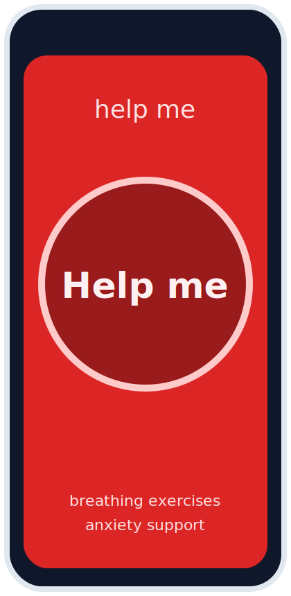
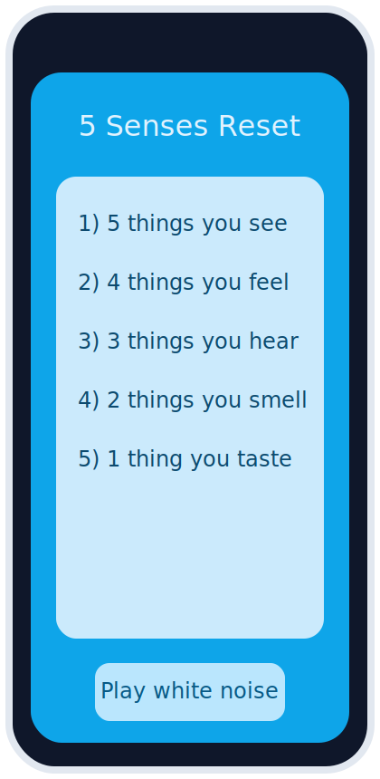
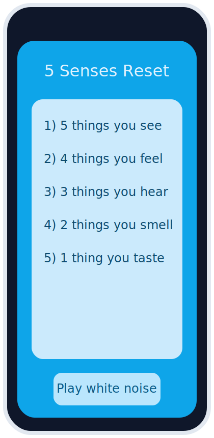
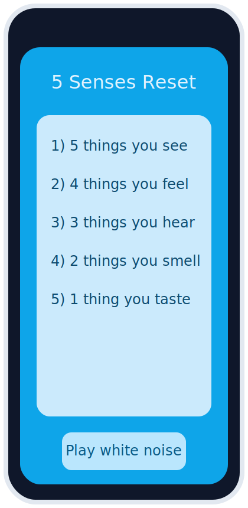

The concept starts from a practical moment: when someone is having anxiety or panic, the closest tool is usually their phone.
The experience must work immediately without requiring complex decisions.
The Market Gap
Many wellness products assume calm cognition and long setup flows. In high-stress states, users need one clear action and fast guidance,
not menu-heavy navigation.
The Vision
Build a low-friction support flow where a user taps “Help me,” receives breathing guidance, checks in, then transitions into grounding.
Visual tone intentionally shifts from alert red to calming blue.
Constraints
Designing for high-stress moments where cognitive bandwidth is limited.
Need for minimal interaction steps while still offering meaningful support options.
Balancing emotional tone, clarity, and accessibility in a single-screen-first experience.
Success Criteria
User can start support immediately from app open with near-zero friction.
Flow helps users progress from panic entry to calmer state through guided steps.
Experience is understandable enough to be adopted by stakeholders as a viable product direction.
Product & Design Thinking
User Segments
People experiencing acute anxiety or panic episodes who need immediate support.
Users who prefer quick, phone-first interventions over long-form wellness routines.
Research & Insights
Prioritized low cognitive load as the primary design principle.
Identified a beneficial sequence: breathing first, then state check-in, then grounding by 5 senses.
Used visual pacing and color transition as part of emotional regulation support.
Execution (Design to Build)
Design
I defined the core interaction flow, onboarding nickname prompt, and screen-level structure. The entry screen emphasizes one large “Help me” action,
while subsequent states guide breathing, check-in, and grounding.


Engineering
The concept is structured for implementable state transitions (entry -> breathing -> check-in -> grounding) and modular support blocks,
making it suitable for iterative prototyping and future production hardening.

 
